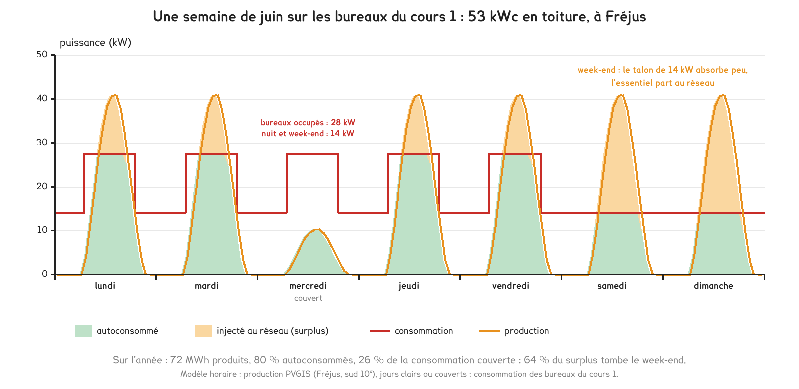
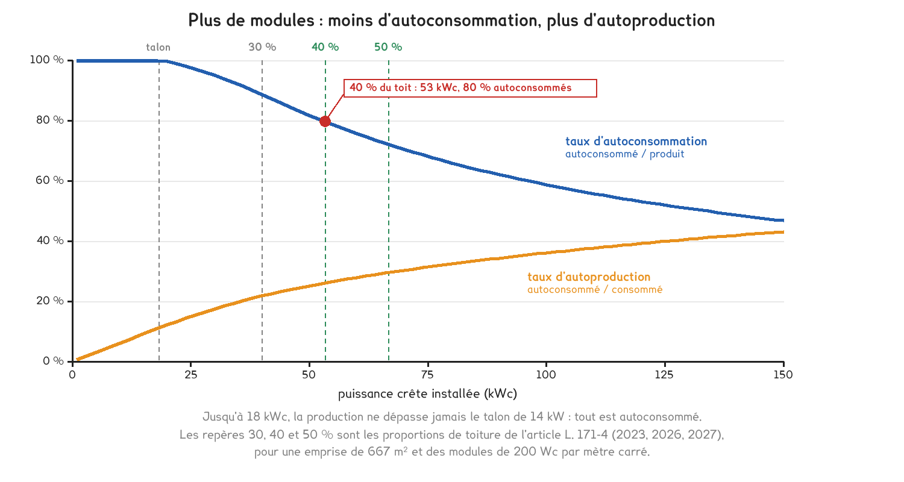

Document de formation du professeur — ne pas diffuser aux étudiants
Formation du professeur · BTS FED option C
Des ombrières imposées sur les parkings par la loi APER, des toitures à couvrir par l'article L. 171-4, une production partagée à Montigny-lès-Metz, un stockage de 300 MW qui brûle à Moss Landing, des éoliennes de toit mesurées à Warwick, une péninsule privée de courant le 28 avril 2025. Six cas réels, et la théorie que chacun oblige à tenir, du productible à l'onduleur de secours, avec des calculs refaits pour les bureaux du cours 1.
Savoirs travaillés
Un bâtiment qui produit son électricité ne choisit ni l’heure ni la saison de sa production. Le soleil de juin tombe sur des bureaux vides le samedi, le vent souffle mal au-dessus des toits, et le réseau, qui absorbait tous les écarts, peut disparaître pendant dix-huit heures. Deux textes de loi, une opération partagée, un incendie, une campagne de mesure et une panne générale posent la même question sous six formes : à quel moment l’énergie est-elle disponible, et à quel moment sert-elle ?
La réponse change la grandeur qui compte. Produire se juge en kilowattheures par an, comme la séance 22 de fluides l’a posé. Valoriser se juge heure par heure, et au quart d’heure dans une opération collective. Stocker et secourir se jugent en kilowatts et en minutes : un secours trop faible ou trop court ne sert à rien le jour où il est appelé.
Un kilowattheure produit n’a de valeur qu’au moment où quelqu’un le consomme. Taux d’autoconsommation, clé de répartition, capacité d’une batterie, autonomie d’un onduleur : tout ce que cette page calcule mesure l’écart entre le moment de la production et celui du besoin.
Les bureaux du cours 1 servent de fil : 2 000 m², 220 000 kWh par an, un talon de 14 kW la nuit et le week-end. On les suppose sur trois niveaux, soit une emprise au sol de 667 m², et à Fréjus, pour lequel la base européenne PVGIS fournit l’ensoleillement heure par heure. Les taux calculés sortent d’un modèle horaire décrit au deuxième cas ; les faits des six cas sont documentés et attribués.
La loi n° 2023-175 du 10 mars 2023 relative à l’accélération de la production d’énergies renouvelables, dite loi APER, impose par son article 40 que les parcs de stationnement extérieurs de plus de 1 500 m² soient équipés, sur au moins la moitié de leur superficie, d’ombrières intégrant un procédé de production d’énergie renouvelable. Selon la version en vigueur sur Légifrance, l’échéance est le 1er juillet 2026 pour les parcs d’au moins 10 000 m² et le 1er juillet 2028 pour les autres. Le manquement est sanctionné chaque année jusqu’à la mise en conformité, dans la limite de 40 000 € pour les grands parcs et de 20 000 € pour les autres.
Le texte fixe une surface, jamais une puissance ni une orientation. L’orientation suit le dessin du parking, et l’inclinaison reste faible pour limiter la hauteur de la structure et sa prise au vent. Le productible s’en ressent, et PVGIS le chiffre pour Fréjus avec des pertes système de 14 % :
| Plan des modules, à Fréjus | kWh par kWc et par an | Rapport à l’optimum |
|---|---|---|
| optimum calculé par PVGIS : 38°, plein sud | 1 499 | 100 % |
| plein sud, 30° | 1 486 | 99 % |
| plein sud, 10° | 1 353 | 90 % |
| à plat | 1 235 | 82 % |
| ouest, 10° | 1 230 | 82 % |
| est, 10° | 1 220 | 81 % |
| façade plein sud, verticale | 1 016 | 68 % |
Une ombrière perd donc de 10 à 19 % par rapport à l’optimum selon l’orientation que le parking lui impose. Le nombre de kilowattheures par kWc, les heures équivalentes, est le seul qui compare deux projets de tailles différentes.
Pour aller plus loin
PVGIS décompose les pertes du champ plein sud à 30° de Fréjus : angle d’incidence −2,63 %, spectre +0,68 %, température et éclairement −6,79 %, pertes système −14 % (câbles, onduleur, salissure, disponibilité). Les facteurs se multiplient : 0,9737 × 1,0068 × 0,9321 × 0,86 = 0,786. La somme des pourcentages donnerait 22,7 % de pertes au lieu de 21,4 %. Le rapport de la production à l’irradiation dans le plan confirme le produit : 1 485,7 kWh par kWc pour 1 890,6 kWh/m², soit 0,786.
Le ratio varie avec la saison, et dans le sens qui surprend. Plein sud à 10°, il vaut 0,815 en janvier et 0,755 en juillet : le mois qui produit le plus est celui où le rendement est le plus mauvais, parce que la cellule chaude perd de sa tension. Le facteur de charge annuel reste modeste, 1 353 / 8 760 = 15,4 %.
Les ombrières de La Glèbe, à La Rouquette dans l’Aveyron, inaugurées le 26 septembre 2025, portent selon Énergie Partagée 2 298 kW sur environ 10 500 m², soit 219 W/m², et produisent 2 673 MWh par an : 1 163 kWh par kW, quand PVGIS donne 1 177 pour ce lieu à 10° plein sud. L’annonce est cohérente. Son coût, 3,4 M€, fait 1 480 € par kW, davantage qu’une toiture, parce que la structure porte les modules.
La loi dimensionne l’ombrière sur le parking, et non sur un consommateur. Un parking de 12 000 m² reçoit de l’ordre de 1,2 MWc, soit 1,6 GWh par an à Fréjus, et ne consomme presque rien. La règle de la séance 22, « dimensionner au plus près de la consommation », ne s’applique plus : la surface est imposée, et c’est l’usage de l’énergie qu’il faut concevoir, recharge des véhicules, autoconsommation collective ou injection. À La Glèbe, 98 % de la production va à des industriels situés dans un rayon de dix kilomètres.
En classe. Le cas ouvre DOMA24, « Produire et stocker » : la loi est récente, elle touche des parkings que les étudiants connaissent, et elle oblige à calculer un productible sans choisir l’orientation. Question à poser : « Le parking de 12 000 m² du centre commercial voisin doit être équipé ; combien de kWc, combien de MWh, et à qui les vendre ? » L’exercice 1 en donne la résolution ; le relevé d’entreprise n° 6, une facture, fournit le prix de comparaison.
L’article L. 171-4 du code de la construction et de l’habitation impose aux constructions non résidentielles qui créent plus de 500 m² d’emprise au sol, commerces, bureaux, entrepôts, hôpitaux, établissements scolaires et parcs de stationnement couverts, de couvrir une part de leur toiture par un procédé de production d’énergie renouvelable ou par une végétalisation. Selon la version en vigueur sur Légifrance, cette part est d’au moins 30 % depuis le 1er juillet 2023, de 40 % depuis le 1er juillet 2026 et de 50 % à compter du 1er juillet 2027. Le champ et le seuil ont évolué avec chaque loi depuis 2019.
Construits aujourd’hui, les bureaux du cours 1 créeraient 667 m² d’emprise et entreraient dans le champ. À 40 % de la toiture, ils porteraient 267 m² de modules, soit 53 kWc à 200 Wc/m² ; à 50 %, 333 m² et 67 kWc. La loi fixe la surface, le bâtiment la courbe de charge, et les deux taux en découlent.
| Part de toiture | Surface | Puissance | Production | Autoconsommation | Autoproduction |
|---|---|---|---|---|---|
| 30 % (2023) | 200 m² | 40 kWc | 54 MWh | 89 % | 22 % |
| 40 % (2026) | 267 m² | 53 kWc | 72 MWh | 80 % | 26 % |
| 50 % (2027) | 333 m² | 67 kWc | 90 MWh | 72 % | 30 % |

τ_ap = τ_ac × E_prod / E_cons
À 50 % de la toiture : 0,721 × 90 195 / 220 000 = 0,296. Les deux taux ne sont liés que par le rapport des deux énergies.
Tant que la production reste sous le talon, rien ne part au réseau. Dans le modèle, un kWc ne dépasse pas 0,77 kW au pas horaire à Fréjus : la limite est de 14 / 0,77 = 18 kWc, en dessous de laquelle tout est autoconsommé. Au-delà, le week-end décide. À 53 kWc, les deux jours de repos portent 30 % de la production et 64 % du surplus, parce que les bureaux n’y consomment que leur talon.
Ajouter des modules augmente toujours l’énergie autoconsommée et le taux d’autoproduction, et diminue toujours le taux d’autoconsommation. Un objectif s’énonce donc avec les deux taux, et avec la puissance qui les produit.
Pour aller plus loin
La production vient de PVGIS, la base de la Commission européenne : pour Fréjus, plein sud à 10°, pertes système de 14 %, le jour moyen de chaque mois heure par heure et l’énergie mensuelle, 1 353 kWh par kWc sur l’année. Un jour moyen efface les journées claires qui font le surplus ; le modèle distingue donc des jours clairs et des jours couverts, à 25 % d’un jour clair, dans la proportion qui reproduit le jour moyen, de 56 % de jours clairs en janvier à 87 % en juillet. Sur jours moyens, le taux à 53 kWc serait de 85,0 % au lieu de 79,7 % : un calcul sur jours moyens flatte l’installation de cinq points.
La consommation reprend les bureaux du cours 1 : talon de 14 kW, occupation du lundi au vendredi de 7 h à 19 h, 26 000 kWh en janvier, 15 000 kWh en octobre, jours fériés ignorés. C’est la méthode que recommande photovoltaique.info, le site de ressources de l’association Hespul : production horaire tirée de PVGIS, courbe de charge horaire, et somme heure par heure du minimum des deux.
La valeur. Le kilowattheure évité vaut sa part variable : 22,5 c€ HT en heures pleines de saison haute et 15,7 c€ en saison basse avec la facture du cours 1, 17,7 c€ en moyenne pondérée par la production ; on retient 18 c€. Le surplus est vendu 4 c€, hypothèse que la séance 22 envisage. À 53 kWc, le gain vaut 57 511 × 0,18 + 14 644 × 0,04 = 10 938 € par an, 205 € par kWc, et le retour brut 5,4 ans à 1 100 € par kWc. Les 13 kWc ajoutés en 2027 rapportent 133 € par kWc, 35 % de moins que les premiers. L’arrêté du 19 décembre 2023 exonère le maître d’ouvrage dont le coût net, recettes sur vingt ans déduites, dépasse 15 % du coût hors taxes des travaux.
En classe. En DOMA24, faire lire le tableau à l’envers : pourquoi le taux d’autoconsommation baisse-t-il quand on applique mieux la loi ? La réponse attendue nomme le talon et le week-end. En DOMA22, où l’on compte l’énergie, les trois index de production, d’injection et de soutirage suffisent à calculer les deux taux, à condition de savoir lequel on cherche.
Le 6 décembre 2023, la ville de Montigny-lès-Metz, le distributeur messin UEM et le groupe Demathieu Bard ont inauguré un parc photovoltaïque au sol de 300 kWc, propriété d’UEM, sur un terrain situé derrière les services techniques municipaux. Selon UEM, il produit 305 MWh par an, répartis à 85 % entre huit bâtiments communaux, dont l’hôtel de ville, une école, la piscine et un stade, et à 15 % au siège voisin de Demathieu Bard. Le réseau régional Grand Est 100 EnR indique un taux d’autoconsommation de près de 90 %, et le maire estimait que l’opération pourrait couvrir 20 % des besoins des bâtiments communaux.
La répartition annoncée, 85 % et 15 %, a la forme d’une clé fixe. Un jour ouvré à 12 h 30, le parc produit 250 kW ; la commune consomme 300 kW et l’entreprise 20 kW. La clé attribue 212,5 kW à la commune et 37,5 kW à l’entreprise, plafonnés à ses 20 kW : 17,5 kW partent au réseau alors que l’opération consomme 320 kW. Au prorata des consommations, la commune aurait reçu 234,4 kW et l’entreprise 15,6 kW, sans aucun surplus.
Une clé fixe fabrique du surplus même quand l’opération consomme plus qu’elle ne produit : la part d’un participant qui consomme peu est perdue pour les autres. Selon photovoltaique.info, les clés fixes ne redistribuent pas la part inutilisée ; une formule dynamique définie par l’organisateur peut le faire.
L’article L. 315-2 du code de l’énergie lie les participants au sein d’une personne morale. L’arrêté du 21 novembre 2019, en vigueur depuis le 6 mars 2025, borne une opération étendue à deux kilomètres entre les participants les plus éloignés, raccordés en basse tension, et à 5 MW en métropole ; le ministre peut accorder dix kilomètres en zone rurale ou périurbaine, vingt en zone rurale, et 10 MW à certains projets publics.
Pour aller plus loin
Le productible. 305 MWh pour 300 kWc font 1 017 kWh par kWc. PVGIS donne 1 100 kWh par kWc à Metz plein sud à 30° : l’annonce vaut 92 % de l’optimum, ce qui est plausible pour un champ au sol dont l’inclinaison n’est pas connue.
La consommation qu’impliquent les deux taux. À 90 %, 274,5 MWh sont autoconsommés. S’ils couvrent 20 % des besoins, les bâtiments communaux consomment de l’ordre de 274,5 / 0,20 = 1 372 MWh par an : la production ne représente qu’un cinquième de la consommation. Avec un tel rapport, le taux d’autoconsommation devrait approcher 100 % ; les 10 % perdus viennent des jours de fermeture et de la clé fixe, qui plafonne chaque participant à sa part.
Ce que le comptage doit fournir. Les courbes de charge de tous les participants, l’index de production, et une clé transmise dans les délais : quatre jours ouvrés par période de facturation pour une formule dynamique, selon photovoltaique.info. C’est le savoir B9 du référentiel.
En classe. En DOMA22 et en DOMA24, faire calculer un pas de quinze minutes avec les deux clés, puis demander : « Demathieu Bard ferme en août ; que devient sa part de 15 % ? » La réponse, le surplus, montre que la clé est une décision d’exploitation autant qu’une clause de contrat. L’exercice 3 déroule quatre pas.
Le jeudi 16 janvier 2025, vers 15 h, un incendie s’est déclaré dans la phase I du site de stockage par batteries de Vistra à Moss Landing, en Californie : un bâtiment de 300 MW qui contenait environ 100 000 modules lithium-ion, selon l’Agence américaine de protection de l’environnement (EPA). Environ 1 500 personnes ont été visées par des ordres d’évacuation selon ESS News, et les pompiers ont attendu que le feu se consume. L’EPA estime qu’environ 55 % des batteries ont été endommagées ; selon sa page mise à jour le 6 août 2026, l’exploitant et le fabricant recherchent toujours la cause.
Le site entier, 750 MW pour 3 000 MWh selon ESS News, est bâti sur quatre heures de décharge. Le rapport de la puissance à l’énergie s’appelle le régime, ou C-rate : 750 / 3 000 = 0,25 C. C’est la deuxième grandeur d’une batterie après sa capacité, parce qu’elle fixe la durée de décharge à pleine puissance et l’échauffement des cellules.
C-rate = P / E et t = E × DoD × η / P
Une batterie domestique de 10 kWh derrière un onduleur de 5 kW travaille à 0,5 C : 10 × 0,9 × 0,95 / 5 = 1,7 h à pleine puissance.
Selon ESS News, la phase I employait des cellules NMC (nickel, manganèse, cobalt) de LG Energy Solution, logées dans l’ancienne salle des turbines d’une centrale des années 1950, alors que plus de 80 % des stockages de réseau récents emploient le lithium fer phosphate (LFP), qui supporte des températures plus élevées avant de s’enflammer, dans des conteneurs extérieurs conçus pour isoler une défaillance.
Le risque d’une batterie se juge sur trois questions posées avant sa capacité : quelle chimie, où est-elle installée, et qu’est-ce qui empêche une cellule en emballement thermique d’enflammer la suivante ? Moss Landing cumulait une chimie moins stable et un bâtiment clos où la chaleur s’est propagée.
Pour aller plus loin
Par cycle. Une batterie de 10 kWh nominaux déchargée à 90 % avec un rendement de 0,95 restitue 8,55 kWh ; l’aller-retour, 0,95 × 0,95 ≈ 0,90, perd un dixième de l’énergie stockée.
Sur la vie. Le capital se divise par l’énergie restituée pendant toute la durée de vie. Hypothèses d’école : 500 € par kWh installé, profondeur 0,9, rendement 0,9, capacité moyenne de 90 % du neuf.
| Technologie et durée de vie | kWh restitués par kWh installé | Capital par kWh restitué |
|---|---|---|
| lithium, 6 000 cycles | 4 374 | 0,11 € |
| lithium, 3 000 cycles | 2 187 | 0,23 € |
| plomb à 250 €/kWh, 1 200 cycles, profondeur 0,5 | 486 | 0,51 € |
Dans les bureaux. Le modèle du deuxième cas, avec 53 kWc et une batterie de 50 kWh utiles, restitue 7 133 kWh par an, soit 143 cycles : le surplus du week-end ne trouve à se vider que dans les nuits de talon. Chaque kilowattheure restitué évite 18 c€ et prive de la vente de 1 / 0,9 kWh à 4 c€ : il rapporte 0,136 €, soit 967 € par an. Au prix de la séance 22, 25 000 € pour 50 kWh, le retour atteint 26 ans ; sur quinze ans, l’équilibre demande 290 € par kWh. La limite tient aux cycles que le bâtiment offre, bien avant la durée de vie de la batterie.
Le condensateur, que le référentiel range dans le même savoir, stocke de la puissance plutôt que de l’énergie. Un supercondensateur de 3 000 F sous 2,7 V contient ½ × 3 000 × 2,7² = 10 935 J, soit 3 Wh : de quoi franchir une microcoupure, pas une heure.
En classe. En DOMA24, puis en DOMA20 pour le local des sources secourues, poser la question d’un client : « Je veux une batterie de 10 kWh dans le garage ; que faut-il vérifier avant le devis ? » On attend la chimie, le lieu et sa séparation des pièces de vie, la ventilation, la notice, le régime imposé par l’onduleur, et la fonction visée : les critères de choix du savoir B10.
Les Warwick Wind Trials, conduits par le bureau d’études britannique Encraft avec le soutien du Pilkington Energy Efficiency Trust, du conseil de district de Warwick et du BRE Trust, ont suivi pendant douze mois, à partir de 2007, vingt-trois éoliennes de toit sur des sites urbains et ruraux, d’Aberdeen à la Cornouailles, dont dix à Warwick. Le parc comptait quatorze Ampair 600, cinq Windsave WS1000, trois Zephyr AirDolphin, une Swift de 1,5 kW et une Eclectic Stealthgen 400, dont une machine de réserve. Chaque site enregistrait la vitesse du vent et l’énergie produite, pour comparer la production réelle à la prévision. Les résultats ont été présentés le 13 janvier 2009.
Le site du projet en tire deux constats : l’emplacement pèse plus que tout sur la production, et la courbe de puissance du constructeur renseigne mal sur ce qu’une machine produira en ville. Le rapport final, qui donne les chiffres site par site, n’est plus accessible à l’adresse du projet ; aucun n’est repris ici, et le calcul qui suit est celui que la campagne oblige à poser.
La séance 22 de fluides a donné P = ½ ρ S v³ et la limite de Betz. Deux compléments expliquent la déception. La puissance moyenne n’est pas celle de la vitesse moyenne : pour une distribution de Rayleigh, la moyenne des cubes vaut 6/π ≈ 1,91 fois le cube de la moyenne. Et sous le seuil de démarrage, 3 m/s pour une petite machine, rien n’est produit : à 3,5 m/s de moyenne, le vent reste 44 % du temps sous ce seuil.
P moyenne = ½ × ρ × S × Cp × (6/π) × v³, sans seuil ni plafond
Rotor de 1,7 m à 5 m/s de moyenne : 83 W par la formule, 80 W une fois le seuil et le plafond appliqués.
Le calcul complet, pour une machine de 600 W et de 1,7 m de diamètre dont la puissance suit ½ ρ S Cp v³ entre 3 m/s et sa vitesse nominale de 12 m/s :
| Vitesse moyenne au rotor | Puissance moyenne | Énergie par an | Facteur de charge |
|---|---|---|---|
| 3,0 m/s | 16 W | 142 kWh | 2,7 % |
| 3,5 m/s | 27 W | 237 kWh | 4,5 % |
| 4,0 m/s | 41 W | 360 kWh | 6,9 % |
| 5,0 m/s | 80 W | 698 kWh | 13,3 % |
| 6,0 m/s | 129 W | 1 126 kWh | 21,4 % |
Sur un toit, la vitesse moyenne décide de tout : de 4 à 5 m/s, la même machine produit 1,94 fois plus. Une promesse de production ne vaut que par la vitesse moyenne qu’elle suppose, et c’est cette vitesse qu’il faut demander.
Pour aller plus loin
La courbe de puissance d’une éolienne se mesure dans un vent établi, régulier en vitesse et en direction. Sur un toit, l’écoulement décolle au bord de la toiture, change sans cesse de direction et fluctue : le rotor passe son temps à s’orienter, et une partie du vent qui le traverse ne produit rien. Le constat de Warwick tient à cette différence.
La vitesse moyenne elle-même baisse près des obstacles, et le cube amplifie chaque perte : 20 % de vitesse en moins font 0,8³ = 0,51, la moitié de la puissance. Le calcul inverse est aussi parlant : une machine de 1 kW et de 2,1 m annoncée pour 1 500 kWh par an suppose 5,65 m/s de moyenne à hauteur du rotor, une vitesse qu’il faut avoir mesurée sur le toit avant de signer.
En classe. En DOMA24, donner la promesse avant la formule : « une éolienne de 1 kW produit 1 500 kWh par an ». Faire retrouver la vitesse moyenne qu’elle suppose, puis la comparer au productible d’un kWc photovoltaïque sur le même toit. Le protocole de Warwick, un anémomètre et un compteur par site pendant un an, montre la seule façon honnête de conclure.
Le 28 avril 2025 à 12 h 33, l’Espagne continentale et le Portugal ont perdu la totalité de leur alimentation électrique ; une petite zone du sud-ouest de la France a été brièvement touchée. Le panel d’experts d’ENTSO-E, qui a publié son rapport final le 20 mars 2026, attribue l’incident à une combinaison de facteurs, dont des oscillations, des lacunes du réglage de la tension et de la puissance réactive et des déconnexions de production en cascade, qui ont fait monter la tension. Selon France 24, plus de 99 % de la demande espagnole était rétablie le lendemain à 7 h.
Toujours selon France 24, le Portugal avait reconnecté ses 6,4 millions de clients dans la nuit, et trois personnes âgées sont mortes en Galice, probablement intoxiquées au monoxyde de carbone après avoir utilisé un groupe électrogène. Près de dix-huit heures et demie séparent la coupure du rétablissement espagnol, une durée qu’aucune batterie de bâtiment ordinaire ne couvre.
Une alimentation sans interruption, que le métier appelle onduleur, se range selon la norme IEC 62040-3 en trois familles, qui diffèrent par ce que la charge reçoit du réseau en fonctionnement normal.
| Famille IEC 62040-3 | Nom courant | En fonctionnement normal | À la coupure | Emploi type |
|---|---|---|---|---|
| VFD | attente passive, off-line | le réseau tel quel | bascule en quelques millisecondes | poste isolé |
| VI | interactive | le réseau, corrigé en tension | bascule courte | baie de brassage, petit serveur |
| VFI | double conversion, on-line | tension et fréquence refabriquées en permanence | aucune bascule | salle informatique, GTB, charges sensibles |
t = E_restituée × η / P
Une batterie au plomb déchargée en un quart d’heure ne restitue guère plus de la moitié de sa capacité nominale en dix heures : l’autonomie se lit dans les tables du fabricant, pas sur l’étiquette. L’exercice 2 en fait le calcul.
Un onduleur photovoltaïque n’est pas une alimentation secourue. Le 28 avril 2025, une toiture solaire sans batterie ni fonction d’îlotage s’est arrêtée avec le réseau, comme sa protection de découplage l’impose pour ne pas alimenter une ligne sur laquelle un agent peut intervenir. Autoconsommer et secourir sont deux fonctions, qui demandent deux matériels.
Pour aller plus loin
Deux régimes. La fiche PROF4 traite la sécurité, ce que la réglementation impose de maintenir, avec un calcul en ampères-heures sur le courant de veille, C = I × t × k. Cette page traite le confort, ce que l’exploitant choisit de maintenir : informatique, GTB, contrôle d’accès, un ascenseur. Le premier se prescrit, le second se négocie avec le client.
kVA et kW. Une ASI se désigne par sa puissance apparente, et sa plaque indique aussi une puissance active. Un appareil de 3 kVA au facteur de puissance 0,9 ne fournit que 2,7 kW : il ne tient pas une baie de 3 kW. On choisit sur les kilowatts, puis on vérifie les kilovoltampères.
Le groupe. Une ASI de dix minutes suffit à franchir les dix secondes de démarrage d’un groupe et à arrêter proprement un serveur. Le groupe, lui, s’installe à l’extérieur ou dans un local ventilé conçu pour lui : les décès de Galice rappellent qu’un moteur thermique dans un local fermé tue.
En classe. La question se pose en DOMA20, « SSI, balisage et sources secourues », puis en DOMA24 : « Le 28 avril 2025 à 14 h, qu’est-ce qui fonctionne encore dans les bureaux du cours 1 ? » La réponse attendue sépare ce que la réglementation impose de secourir, qui relève de la fiche PROF4, de ce que l’exploitant choisit de secourir, et constate que les 53 kWc de la toiture ne servent à rien ce jour-là.
Tout ce qui précède raisonne avec un réseau présent. Le réseau absorbe le surplus, fournit le manque, impose la tension et la fréquence : l’autoconsommation se calcule alors en énergie, sur une année, et une erreur de quelques kilowatts coûte quelques euros. Dès que le réseau disparaît, le bâtiment devient un îlot, et les grandeurs changent de rôle.
| Réseau présent | Réseau absent, en îlot | |
|---|---|---|
| Ce qui fixe tension et fréquence | le réseau | un onduleur de batterie formeur de réseau |
| Ce qui se dimensionne | l’énergie annuelle, en kWh | la puissance simultanée, en kW, démarrages compris |
| Le jour de référence | l’année moyenne | le pire jour : hiver, ciel couvert, bureaux occupés |
| Le surplus | injecté et vendu | à écrêter, faute de preneur |
| Une erreur de dimensionnement | quelques euros par an | l’arrêt de tout le tableau |
Les bureaux appellent en moyenne 70,5 kW pendant l’occupation en janvier et 27,6 kW en juin. La batterie de 50 kWh utiles du calcul de rentabilité les tiendrait 43 minutes en janvier et 1 h 49 en juin, derrière un onduleur de plus de 70 kW. On ne secourt donc pas un bâtiment : on secourt un tableau, les départs qu’on a décidé de maintenir, regroupés en aval d’un inverseur de sources. C’est le savoir C1-1 du référentiel, la gestion des sources et des départs d’un TGBT, et la décision précède le choix de toute batterie.
Pour aller plus loin
Séparer. Un organe de coupure automatique isole le bâtiment du réseau public avant toute réalimentation : c’est la condition de sécurité des agents du distributeur, la même que celle du découplage.
Former le réseau. Un onduleur de batterie capable de fabriquer seul la tension et la fréquence prend la place du réseau. Les onduleurs photovoltaïques ordinaires se synchronisent sur lui comme sur le réseau public.
Écrêter. Batterie pleine, le surplus n’a plus de destination : l’onduleur de batterie élève la fréquence, et les onduleurs photovoltaïques, qui réduisent leur puissance quand la fréquence monte, suivent la consigne sans liaison de communication.
Dimensionner sur le tableau secouru. À 3 kW, les dix-huit heures et demie de l’incident ibérique demanderaient 55 kWh utiles, soit 82 kWh nominaux en lithium fer phosphate. La batterie grossit comme la durée, alors qu’un groupe ne demande que du carburant : les bâtiments qui ne peuvent pas s’arrêter s’équipent de groupes.
La séance 22 de fluides vérifie une installation donnée. Le bureau d’études part de l’autre bout : on lui fixe un taux d’autoconsommation visé, ou une autonomie, et il cherche la puissance crête ou la capacité. Sont fixés la courbe de charge, le site et l’orientation ; restent libres la puissance et la batterie.
Pour la puissance, on superpose heure par heure la production et la courbe de charge, on somme le minimum des deux, et l’on fait varier la puissance jusqu’au taux visé. Pour les bureaux, le modèle du deuxième cas donne :
| Taux d’autoconsommation visé | Puissance crête | Production | Taux d’autoproduction |
|---|---|---|---|
| 100 % | 18 kWc au plus | 24 MWh | 11 % |
| 95 % | 30 kWc | 41 MWh | 18 % |
| 90 % | 38 kWc | 52 MWh | 21 % |
| 80 % | 53 kWc | 71 MWh | 26 % |
| 70 % | 71 kWc | 96 MWh | 31 % |

Un seul calcul tient sans simulation : P_c ≤ P_talon / p_max, où p_max est la puissance maximale d’un kWc sur le site, 0,77 kW au pas horaire à Fréjus dans le modèle. Il donne 14 / 0,77 = 18 kWc, la puissance sous laquelle tout est autoconsommé : un plancher, jamais un optimum. L’optimum dépend des prix, et la valeur décroissante des derniers kWc, calculée au deuxième cas, le situe.
Pour la batterie de secours, on fixe la puissance du tableau secouru et la durée, et l’on cherche la technologie et la capacité.
E_nom = P × t / (DoD × η × SoH)
Puis vérifier le régime : P / E_nom ne doit pas dépasser ce que la batterie admet.
Pour aller plus loin
L’énergie utile vaut 3 × 4 = 12 kWh.
En lithium fer phosphate, profondeur 0,9, rendement 0,94, fin de vie 0,8 : 12 / (0,9 × 0,94 × 0,8) = 17,7 kWh nominaux. Le régime vaut 3 / 17,7 = 0,17 C, très en dessous de ce que la chimie admet.
En plomb, profondeur 0,5, rendement 0,85, fin de vie 0,8 : 12 / (0,5 × 0,85 × 0,8) = 35,3 kWh nominaux, soit 735 Ah sous 48 V. Pour la même autonomie, il faut deux fois la capacité du lithium, avant même de compter la perte liée au régime de décharge.
Vérification. La batterie lithium restitue 17,7 × 0,9 × 0,94 = 15,0 kWh neuve et 12 kWh en fin de vie : l’autonomie est tenue jusqu’au dernier jour. Une capacité rendue sans la liste des départs secourus ne se vérifie pas.
Pour aller plus loin
Énoncé. Un parc de stationnement extérieur de 12 000 m², places, voies et zone de péage comprises, non concédé, se trouve à Fréjus. Donner l’échéance, la surface d’ombrières, la puissance avec des modules de 200 Wc/m², le productible en plein sud à 10° puis vers l’est à 10°, et la sanction encourue.
Résolution. Le parc dépasse 10 000 m² : l’échéance est le 1er juillet 2026, sauf délai supplémentaire justifié par un contrat et un bon de commande. La moitié de la superficie, 6 000 m², doit être couverte ; en variante mixte, au moins 35 % de cette moitié, 2 100 m², en ombrières, et le reste ombragé par de la végétation. La puissance vaut 6 000 × 0,200 = 1 200 kWc. Plein sud à 10° : 1 200 × 1 353 = 1 624 MWh par an ; vers l’est à 10° : 1 200 × 1 220 = 1 464 MWh, soit 160 MWh et 10 % de moins. La sanction peut atteindre 40 000 € par an jusqu’à la mise en conformité.
Vérification de plausibilité. 1 353 kWh par kWc à Fréjus, contre 1 163 mesurés à La Glèbe, où PVGIS donne 1 177 : le rapport de 1,15 est celui des deux ensoleillements. À 25 m² par place, voies comprises, chacune des 480 places porte 2,5 kWc et 3 382 kWh par an, environ 22 500 km pour une voiture électrique à 15 kWh aux 100 km.
Ce que l’étudiant doit rédiger. La base de la superficie, telle que le décret la définit, le coefficient d’orientation avec sa source, les unités, et la destination de l’énergie : un productible sans preneur n’est pas un projet.
Énoncé. La baie et la GTB des bureaux appellent 3 kW. On veut quinze minutes d’autonomie, le temps d’un arrêt propre ou du démarrage d’un groupe. Choisir la famille d’ASI, sa puissance, et la batterie au plomb sous 48 V, avec un rendement de 0,92, une fin de vie à 0,8, et une batterie qui ne restitue que 55 % de sa capacité nominale en un quart d’heure.
Choisir avant de calculer. Des charges informatiques et une GTB appellent une ASI VFI, à double conversion, sans bascule. La puissance se choisit en kilowatts : 3 kW au facteur de puissance 0,9 font 3,33 kVA, et un appareil de 3 kVA à 0,9 ne fournit que 2,7 kW. Il faut une plaque qui annonce au moins 3 kW.
Résolution. Énergie tirée de la batterie : 3 × 0,25 / 0,92 = 0,815 kWh ; avec la fin de vie, 0,815 / 0,8 = 1,02 kWh ; avec l’effet du régime, 1,02 / 0,55 = 1,85 kWh nominaux, soit 1 850 / 48 = 38,6 Ah, arrondis à 40 Ah. Le courant de décharge vaut 3 000 / (0,92 × 48) = 68 A, soit 1,7 fois la capacité par heure : c’est ce régime qui ampute la batterie de près de moitié.
Vérification de plausibilité. L’énergie consommée pendant le quart d’heure vaut 0,75 kWh, et la batterie en fait 1,85 : un rapport de 2,5, que le rendement, le vieillissement et le régime expliquent entièrement, 1 / (0,92 × 0,8 × 0,55) = 2,47.
Ce que l’étudiant doit rédiger. La distinction entre kW et kVA, l’effet du régime de décharge, et la différence avec le calcul de la fiche PROF4, en ampères-heures sur un courant de veille.
Énoncé. Une opération réunit une commune et une entreprise, sur le modèle de Montigny-lès-Metz, avec une clé fixe de 85 % et 15 %. Quatre pas de quinze minutes d’un jour ouvré de mai, en puissances moyennes sur le pas :
| Pas | Production | Commune | Entreprise |
|---|---|---|---|
| 10 h | 180 kW | 240 kW | 25 kW |
| 12 h 30 | 250 kW | 300 kW | 20 kW |
| 14 h | 230 kW | 180 kW | 60 kW |
| 17 h | 90 kW | 280 kW | 40 kW |
Répartir la production avec la clé fixe, puis avec la clé dynamique par défaut ; calculer le surplus et le taux d’autoconsommation sur les quatre pas ; proposer une clé.
Résolution avec la clé fixe. 10 h : commune min(153 ; 240) = 153, entreprise min(27 ; 25) = 25, surplus 2 kW. 12 h 30 : 212,5 et 20, surplus 17,5 kW. 14 h : commune min(195,5 ; 180) = 180, entreprise 34,5, surplus 15,5 kW. 17 h : 76,5 et 13,5, surplus nul. Les surplus s’additionnent à 35 kW, sur des pas d’un quart d’heure : 35 × 0,25 = 8,75 kWh sur 750 × 0,25 = 187,5 kWh produits, soit un taux d’autoconsommation de 95,3 %.
Résolution avec la clé dynamique. À chaque pas, la consommation totale dépasse la production : tout est attribué au prorata, par exemple 172,5 et 57,5 kW à 14 h. Taux d’autoconsommation : 100 %.
Vérification de plausibilité. Une clé au prorata ne crée de surplus que si la production dépasse la consommation totale ; la clé fixe en crée à 12 h 30 et à 14 h, parce qu’un participant consomme sous sa part pendant que l’autre la dépasse.
Proposition. Une formule dynamique définie par l’organisateur peut garder l’accord de 85 % et 15 % en première attribution, puis redistribuer la part inutilisée : à 14 h, les 15,5 kW que la commune ne consomme pas iraient à l’entreprise, qui en manque de 25,5. Ce que l’étudiant doit rédiger : la règle du plafonnement, le passage des kilowatts aux kilowattheures par le pas de quinze minutes, et la raison du choix de la clé.
| Grandeur | Ordre de grandeur |
|---|---|
| Productible à Fréjus, plein sud à 30° (PVGIS, pertes système 14 %) | 1 486 kWh par kWc et par an |
| Même site, plein sud à 10° · à plat · est à 10° · façade | 1 353 · 1 235 · 1 220 · 1 016 kWh par kWc |
| Productible à Metz, plein sud à 30° | 1 100 kWh par kWc |
| Ratio de performance annuel, pertes système de 14 % | 0,78 à 0,79 ; 0,82 l’hiver, 0,76 l’été |
| Puissance d’un mètre carré de modules | 200 à 220 Wc |
| Puissance maximale d’un kWc à Fréjus, au pas horaire | 0,77 kW |
| Puissance crête sous laquelle les bureaux autoconsomment tout | talon / 0,77, soit 18 kWc |
| Bureaux à 40 % de la toiture : autoconsommation · autoproduction | 80 % · 26 % |
| Biais d’un calcul sur jours moyens | cinq points d’autoconsommation de trop |
| Tertiaire de 883 MWh avec 250 kWc (photovoltaique.info) | 83 % d’autoconsommation |
| Opération collective étendue | 2 km, 5 MW, pas de 15 minutes |
| Régime d’un stockage de réseau de quatre heures | 0,25 C |
| Rendement aller-retour d’une batterie lithium | de l’ordre de 90 % |
| Profondeur de décharge utile | 0,9 en lithium fer phosphate · 0,5 en plomb |
| Cycles par an d’une batterie d’autoconsommation de bureaux | environ 150 |
| Supercondensateur de 3 000 F sous 2,7 V | 3 Wh |
| Rapport de la moyenne des cubes au cube de la moyenne (Rayleigh) | 1,91 |
| Éolienne de toit de 600 W à 3,5 m/s de moyenne | 237 kWh par an, 4,5 % de facteur de charge |
| Plomb déchargé en un quart d’heure | un peu plus de la moitié de sa capacité nominale |
| Autonomie d’un bloc d’éclairage de sécurité (fiche PROF4) | une heure |
| Coupure ibérique du 28 avril 2025 | 18 h 30 avant 99 % de la demande espagnole |
Trois réflexes suffisent à trier la plupart des affirmations : un kWc produit de 900 à 1 500 kWh par an environ en France métropolitaine, selon le site et l’orientation ; un taux d’autoconsommation seul ne dit rien sans la puissance et la consommation ; une éolienne de toit se juge sur la vitesse moyenne mesurée, jamais sur sa puissance nominale.
Pour aller plus loin
Parce que l’onduleur photovoltaïque ordinaire suit le réseau : il se cale sur sa tension et sa fréquence, et il doit s’arrêter quand elles disparaissent, pour ne pas alimenter une ligne sur laquelle un agent peut travailler. Produire pendant une coupure demande une batterie, un onduleur formeur de réseau, un organe de séparation et un tableau secouru, détaillés à la section « Là où la méthode change ». Pour la baie et la GTB des bureaux, 3 kW pendant quatre heures, il faut 17,7 kWh nominaux en lithium fer phosphate.
Oui en kilowattheures, non en taux. De 40 à 67 kWc sur les bureaux, l’énergie autoconsommée passe de 48,0 à 65,0 MWh, mais le taux d’autoconsommation tombe de 89 à 72 % : chaque kWc ajouté produit surtout aux heures où le bâtiment est déjà couvert, le week-end et à midi en été. En euros, les derniers kWc exigés par la loi rapportent 133 € par kWc et par an, contre 205 € pour les premiers : ajouter des panneaux reste rentable, de moins en moins.
Les deux taux seuls ne permettent pas de répondre ; il faut les confronter au productible. Le cas est réel : selon la société Enogrid, source commerciale, Mougins, dans les Alpes-Maritimes, alimente depuis 2023 59 bâtiments communaux par 546 kWc répartis en quatre boucles, avec 87 % d’autoconsommation, 18 % des besoins couverts et 330 MWh autoconsommés chaque année.
Le calcul de cohérence : 330 MWh à 87 % supposent 379 MWh produits, soit 695 kWh par kWc, quand PVGIS donne 1 359 kWh par kWc à Mougins plein sud à 10°. Les trois nombres ne décrivent pas ensemble une année pleine des 546 kWc ; une mise en service échelonnée des boucles l’expliquerait, et c’est la question à poser. Un taux se vérifie par le productible qu’il implique.
Rarement dans un bâtiment tertiaire. Sur les bureaux à 53 kWc, le calcul du quatrième cas donne 143 cycles par an et 967 € de gain annuel pour une batterie de 50 kWh utiles, soit 26 ans de retour à 25 000 €. Elle peut devenir rentable dans trois situations : un surplus vendu presque rien et consommable le soir même, un tarif qui fait payer cher la pointe, ou un besoin de secours qu’on aurait payé de toute façon. Dans le dernier cas, on achète une autonomie, et l’autoconsommation vient en supplément.
Oui : une cellule qui chauffe au-delà d’un seuil libère sa propre énergie, chauffe ses voisines, et l’emballement thermique se propage. La réponse utile porte sur ce qui limite le risque : le lithium fer phosphate, plus stable ; un emplacement séparé des pièces de vie et des issues ; une ventilation ; la notice du fabricant ; un système de gestion qui coupe avant l’emballement. Selon la base de l’institut américain EPRI citée par ESS News, les incidents sont restés autour d’une dizaine par an dans le monde, pendant que les capacités installées étaient multipliées par vingt.
Parce que le vent d’un toit est faible et turbulent, et que la puissance varie comme le cube de la vitesse. Une machine de 600 W et de 1,7 m produit 237 kWh par an à 3,5 m/s de moyenne ; un seul kWc photovoltaïque, cinq mètres carrés environ, produit 1 353 kWh par an à Fréjus, 5,7 fois plus. Si le lycée veut une éolienne pour enseigner, elle a sa place sur un mât dégagé, avec un anémomètre, comme à Warwick ; pour produire, le toit revient aux modules.
01-referentiel, pages 70 et 72 ; niveaux 3 de l’option C pour B6-1, B6-2 et les deux lignes de B10.Les calculs de la page, taux, économie, stockage, éolien, onduleur, sont refaits par un modèle horaire dont le script, _commun/modeles/figs-cours-domo-8.py, porte les données et les hypothèses. Sources consultées le 13 septembre 2026.
Page de formation, réservée au professeur. Elle s'appuie sur des cas réels documentés ; les sources sont données en fin de page.